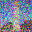

1.1 Implementing the Forward Process
In this part, we implement the noisy_im = forward(im, t) function. Down below, I have the test image at noise levels [250, 500, 750].

Berkeley Campanile

Noisy Campanile at t=250

Noisy Campanile at t=500

Noisy Campanile at t=750
1.2 Classical Denoising
We now try to denoise these images using classical methods. Down below are the noisy images from above with Gaussian blur filtering.
Gaussian Blur Denoising at t=250
Gaussian Blur Denoising at t=500
Gaussian Blur Denoising at t=750
1.3 One-Step Denoising
This time, we use the pretrained diffusion model to denoise. This diffusion model was trained with text conditioning, so we use the prompt "a high quality photo."

Noisy Campanile at t=750

One-Step Denoised Campanile at t=250

One-Step Denoised Campanile at t=500
One-Step Denoised Campanile at t=750
1.4 Iterative Denoising
The denoising UNet worked much better, but we can still improve via iterative denoising. Down below are the noisy image every 5th loop of denoising in the iterative_denoise function, the final predicted clean image, the predicted clean image using only a single denoising step, and the predicted clean image using gaussian blurring.

Noisy Campanile at t=540
Iteratively Denoised Campanile
One-Step Denoised Campanile
Gaussian Blurred Campanile
1.5 Diffusion Model Sampling
This time, we use the iterative_denoise function and pass in random noise. Here are 5 results.
1.6 Classifier-Free Guidance (CFG)
In order to improve on image generation, we incorporate CFG, which is implemented in the iterative_denoise_cfg function. Here are another 5 samples using the prompt "a high quality photo" with a CFG scale of gamma=7.
1.7 Image-to-image Translation
In this part, we add variuos amounts of noise to our input image and pass it into iterative_denoise_cfg. Adding more noise causes the model to "hallucinate" new things, forcing it to be "creative" -- one way to think about it is that the denoising process "forces" a noisy image back onto the manifold of natural images.
Campanile

SDEdit with i_start=20
1.7.1 Editing Hand-Drawn and Web Images
We now try the same with nonrealistic image. I have chosen a cartoon drawing of a table and have also drawn three images myself.
Star and Moon at i_start=1
Star and Moon at i_start=3
Star and Moon at i_start=5
Star and Moon at i_start=7
Star and Moon at i_start=10
Star and Moon at i_start=20

Flower at i_start=10
1.7.2 Inpainting
This time, we do inpainting with a mask. We create a new image that has the same content where m=0 and new content wherever m=1. It is pretty cool how the picture of Campanile became a picture of a person wearing a Campanile-dress. Otherwise, the inpainting worked out very nicely for the deer and the sunset.
Campanile

Hole to Fill
1.7.3 Text-Conditional Image-to-image Translation
This time, we guide the projection with a text prompt. Down below, I have a picture of the Campanile morphing to a rocket, a cat morphing to a dog, and a donut morphing to a painting of people sitting around a campfire.
Rocket Ship at i_start=10
Rocket Ship at i_start=20
Campanile
1.8 Visual Anagrams
Now, we create visual anagrams by obtaining the noise estimate for the upright and upside down images, averaging them, and performing a reverse/denoising diffusion step with the averaged noise estimate. The first anagram is of "an oil painting of an old man" and "an oil painting of people around a campfire", the second anagram is of "a rocket ship" and "a pencil", and the third anagram is of "a photo of the amalfi cost" and "a photo of a dog".
an oil painting of an old man
an oil painting of people around a campfire
a photo of the amalfi coast
1.9 Hybrid Images
This time, we implement Factorized Diffusion and create hybrid images. We create three images down below (the first description is when the image is far away, and the second description is when the image is close up). I tried making many images of the barista and the dog, and one observation that I had was that oftentimes it was either the case that the dog image never really appeared or was incorporated into the barista's apron.
Hybrid image of a skull and a waterfall
Hybrid image of a rocketship and a snowy village
Hybrid image of a barista and dog